SUGURS: Mobile App Game
Design of a children's game application to educate and prevent domestic hazards.
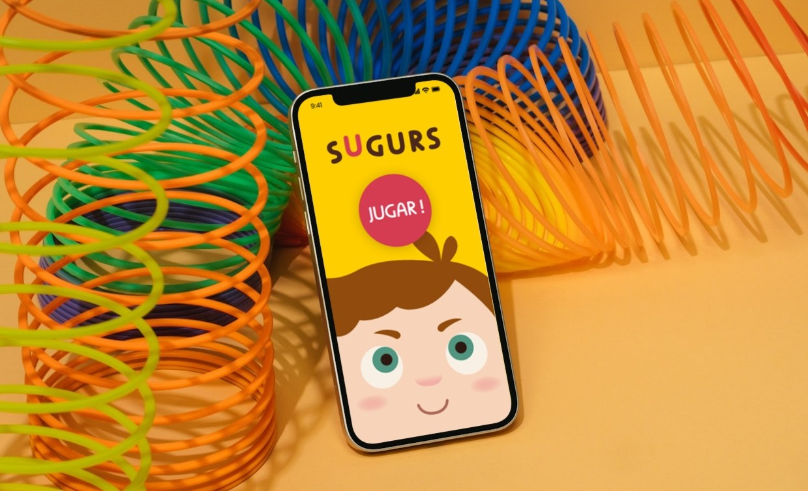
Overview
In this project I was asked to create a mobile application aimed at young children in order to raise awareness and educate them about the dangers they may encounter in their environment.
Problem & Goals
Children are often exposed to potentially dangerous situations in everyday environments such as the home, school, or public spaces. However, traditional educational approaches about safety can sometimes feel abstract or difficult for younger audiences to fully understand and remember.
The goal of this project was to design a mobile application that teaches children to recognize and avoid common hazards through an engaging and accessible experience. By combining educational content with playful interaction and simple visual communication, the application aims to help children learn about safety in a way that feels intuitive, memorable, and enjoyable.
The design needed to consider the cognitive abilities of children between 6 and 8 years old, ensuring that navigation, visual language, and interactions were easy to understand even for users with limited reading skills.
Process
Briefing & Analisys
The first step was to prepare a briefing about the project and everything related to it, as well as an analysis of the company requesting this work (Institut Català de Seguretat i Salut Laboral).
Some of the questions I answered in the briefing were "what objectives should the app fulfill?", "what types of activities should be seen in the app?", "what type of image can be used?", and so on.
Thanks to this, I was able to gather and structure all the necessary information to understand the needs and begin thinking about the type of application I was going to create.
Needs Identified & Proposal
With the information previously organized, I created another document where I noted all the needs I identified and began to write the proposal.
Target Audience
I decided on the target audience before moving on to the content and design phase to understand what kind of app would be most appealing to children in that age group.
The final decision was to target children between 6 and 8 years old. Therefore, boys and girls with linguistic and audiovisual communication skills, mathematical competence, and artistic and cultural competence. Children capable of interpreting visual content, understanding and communicating through language, and with mathematical knowledge, such as the ability to identify numbers and even perform simple operations.
Design Principles
Given the age group this mobile application was aimed at, I needed to clarify some basic principles before starting the process:
Simplicity: Only show essential information; avoid overloading the screen with irrelevant information.
Visual communication more important than text: Given the young age of some of the children, their reading skills might not be fully developed yet, so it was important to give greater importance to illustrations, colors and other visual elements as the main form of communication.
Clear interactions: Buttons and other interactive elements should be large and highly visual so that young children can easily press them.
Playful approach: To capture the attention of the little ones and encourage them to want to use the application, I had to make the experience feel like a game and through this teach safety concepts.
Moodboard & Referents
I created a mood board to start shaping the aesthetic; elements, shapes, colors... and then I started looking for references.
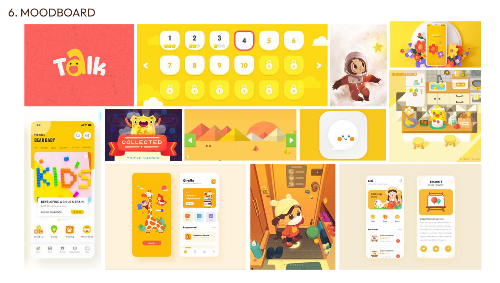
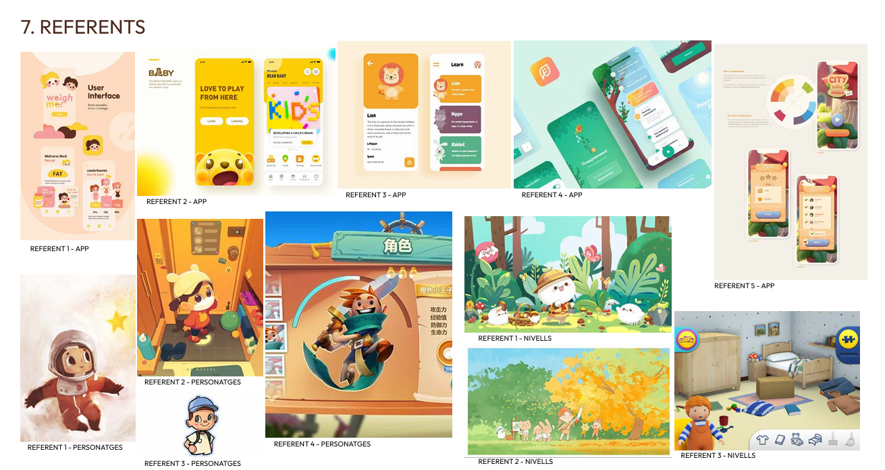
Color Palette & Typography
I started creating a color palette and deciding which elements I would use each color for.
I also looked at different fonts and did some test typing with them to see how they would look and if they were suitable for this type of application.
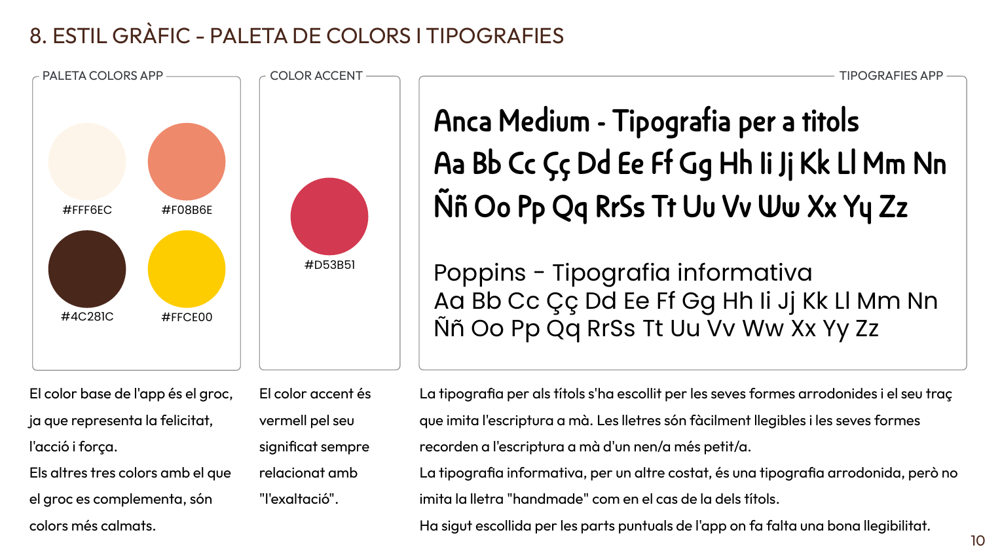
Graphic Style and Logo
First, I started working on paper, sketching out some ideas for the style of elements that would appear in the app, such as the characters. After that, I also began making some rough sketches of the logo and its different forms.
Once both were finalized, I transferred them to a digital format using Illustrator.
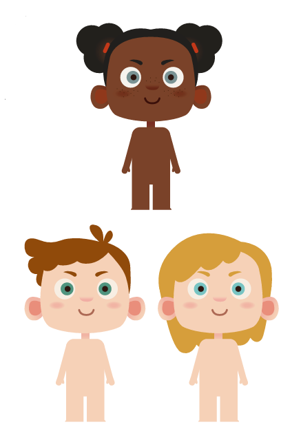
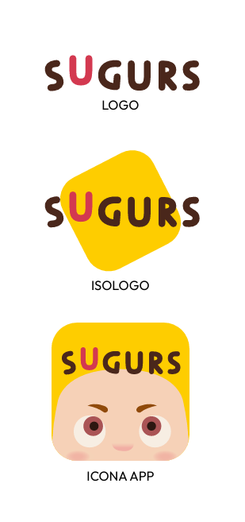
Character & Environment Design
I created various customization options for user avatars and ran several tests using all the available options (hairstyles, colors, eyes, accessories, etc).
I also started designing some of the environments/levels and elements that would appear in them.
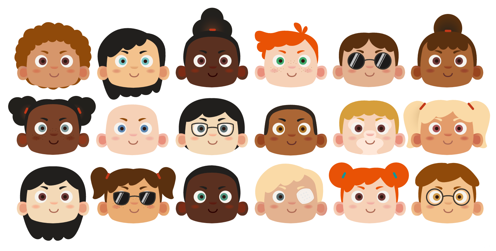
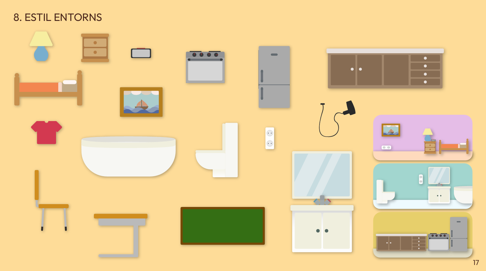
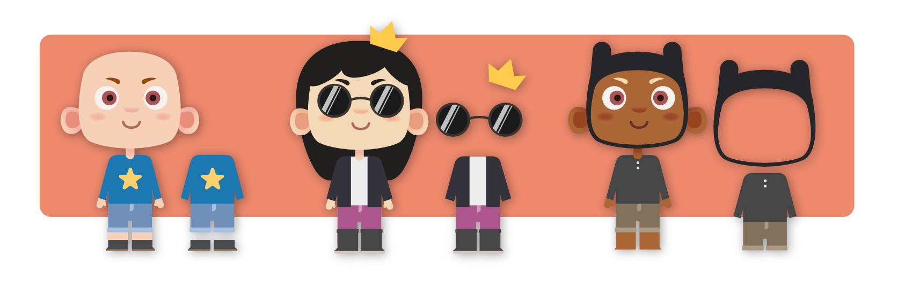
Navigation Tree
Creating a navigation tree was essential before starting to create the app's screens, to have a clear understanding of the path and what the experience would be like.
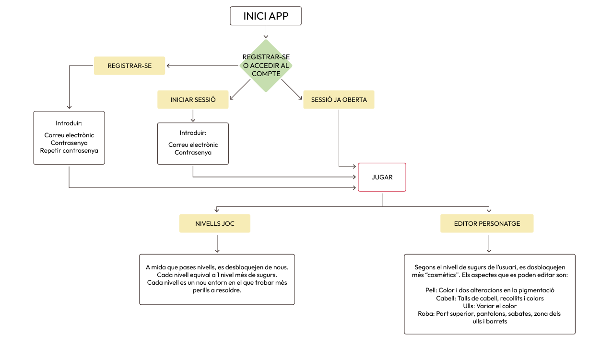
Grid
To begin designing the application, I opted to use a four-column grid as a base, taking into account once again the target audience.
Thanks to the four-column grid on a mobile device screen, the elements are easy to scan visually and the buttons are large enough to tap on.
Wireframes
I started defining the screens by creating the wireframes: first on paper, then I started to transfer it to digital, also experimenting a bit with the shapes and distribution and finally I made the final wireframes in Illustrator.
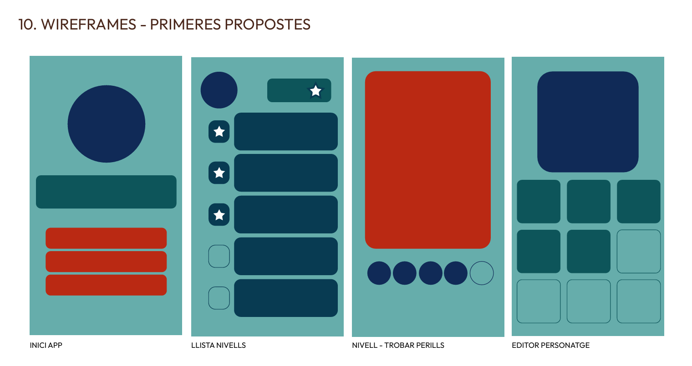
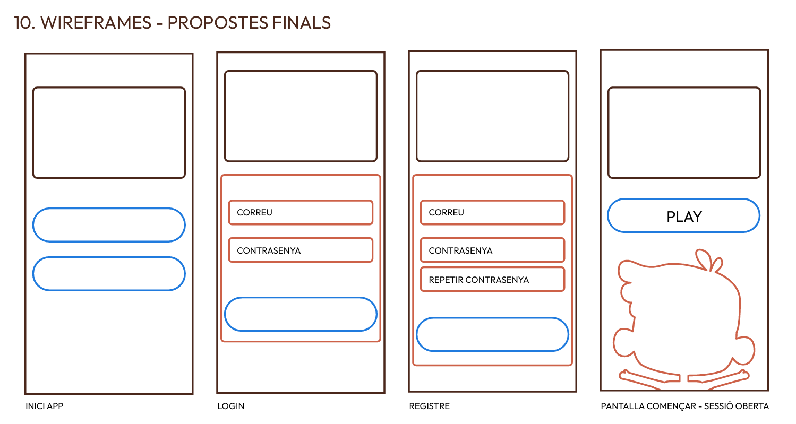
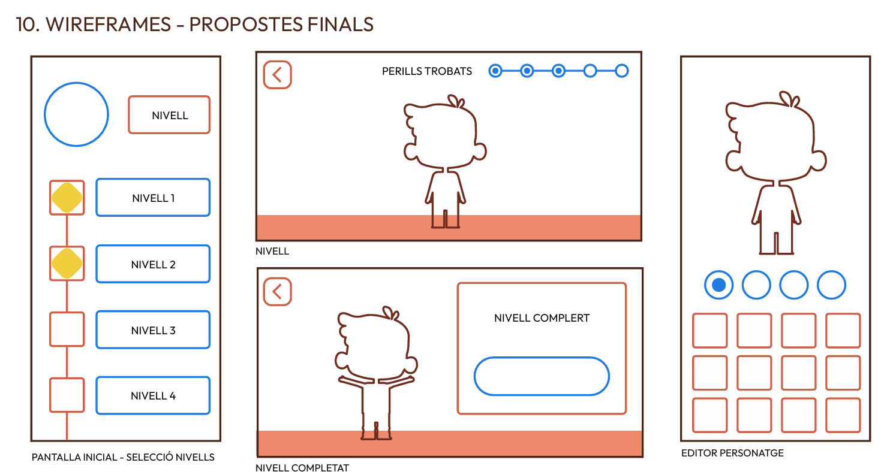
Final Screen Designs
Here I started working on the final appearance of the screens of this application through Adobe XD: the same program I used to create the prototype to show a first concept of this proposal.
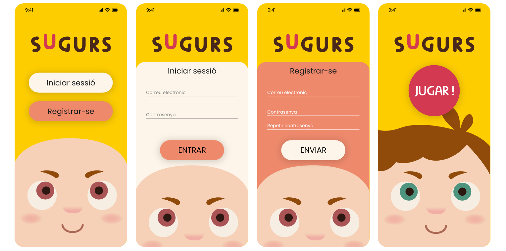
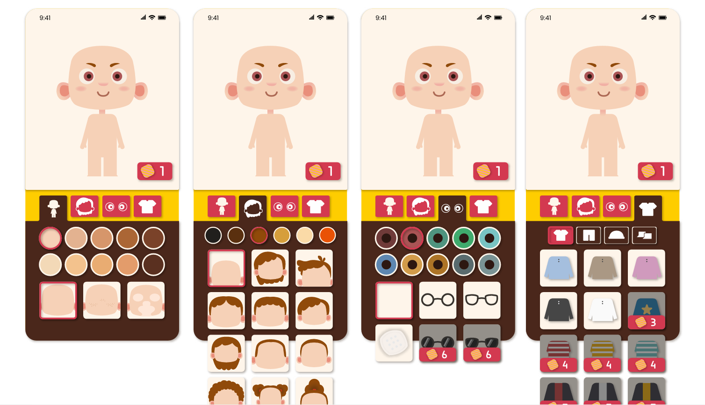
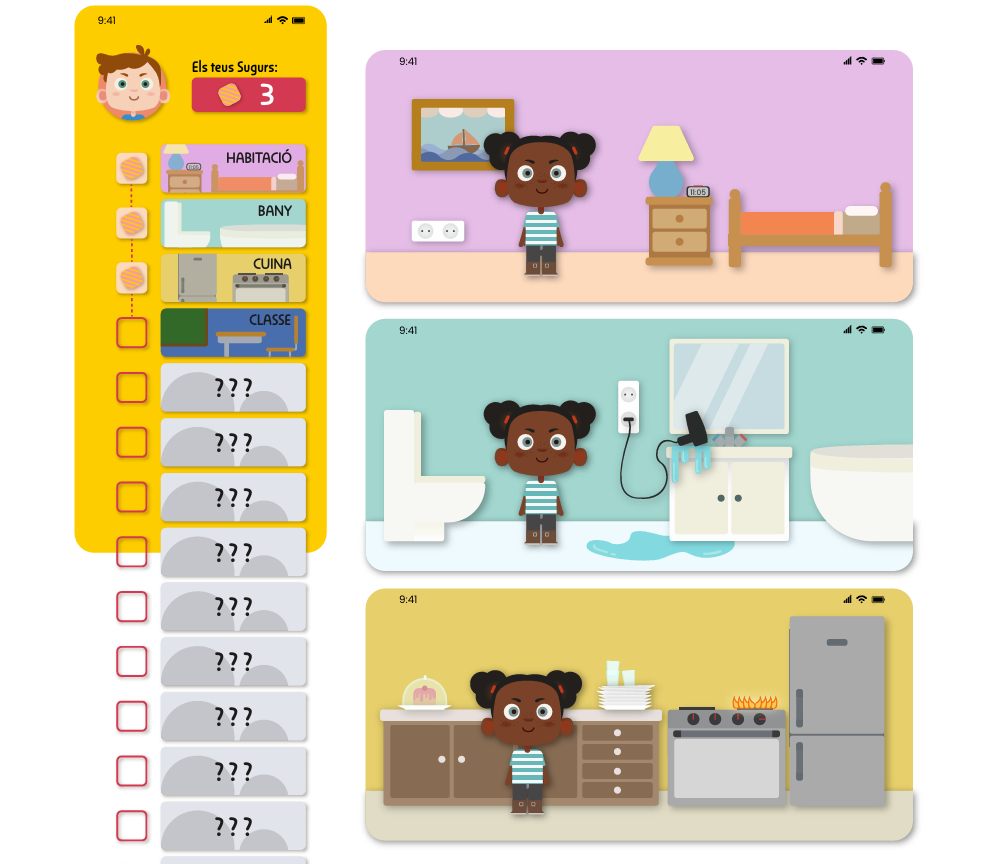
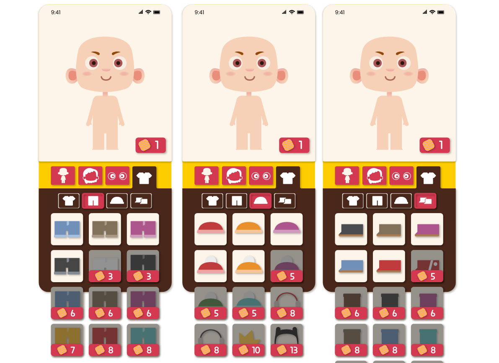
Defense Argument
To finalize the project, I prepared a new document with arguments to present and defend the project I was presenting and all the decisions I had made up to that point.
I also added a conclusion to recap the initial needs and how they had been met.
Final Outcome
You can access the Adobe XD prototype here: SUGURS Prototype

The final proposal addresses the requirements defined by the Institut Català de Seguretat i Salut Laboral (ISCL).
Children can have a tool that allows them to identify the dangers they can find in all types of environments in order to learn to be careful and know how to take care of them when they find themselves in a dangerous situation.
The capabilities of users with the chosen age have been taken into account, so that they can navigate the application and understand its content even if they have difficulty understanding written language.
The process of overcoming levels has been gamified to make it more attractive to children and a way has been achieved to make
that when they play they have a character through which they can feel more identified with the situations/environments.
In addition, as a secondary element, taking advantage of the fact that character creation is an important factor in the application, an editor with a lot of diversity has been created and a way has been sought to make it as inclusive as possible.
Reflection
This project allowed me to explore how design can be used as an educational tool for younger audiences. One of the most interesting challenges was adapting the interface and visual communication to children between 6 and 8 years old, which required simplifying interactions, prioritizing visual elements, and ensuring that information could be understood even without relying heavily on text.
Designing the characters, environments, and visual style was also an important part of the process, as these elements play a key role in making the experience engaging and approachable for children. Balancing playful aesthetics with clear usability was essential to ensure that the application remained both fun and educational.
If I were to continue developing this project, I would conduct usability testing with children in the target age group in order to observe how they interact with the interface and validate the effectiveness of the educational mechanics. This would help refine the interactions, pacing of the levels, and clarity of the safety messages presented throughout the experience.
Overall, this project reinforced the importance of designing with the specific needs and abilities of the target audience in mind, especially when creating products aimed at younger users.